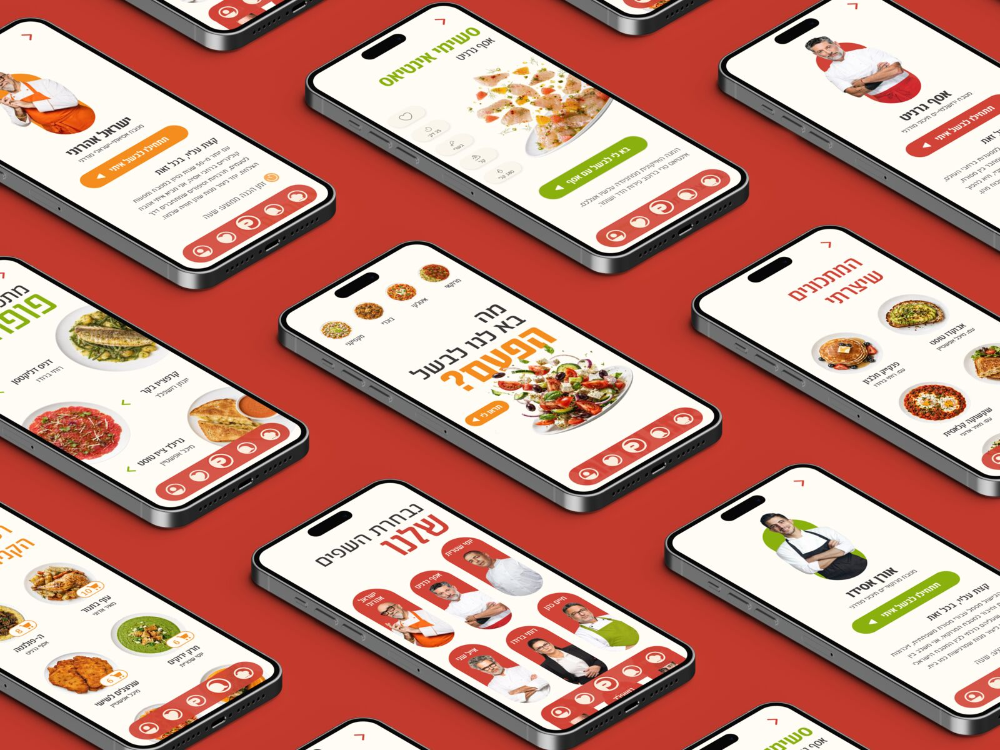
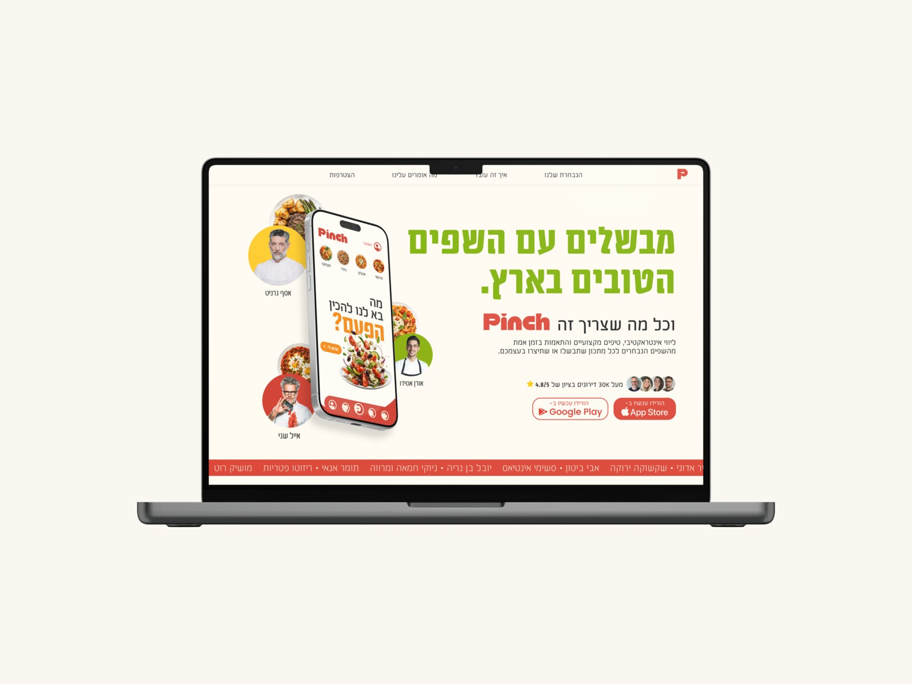
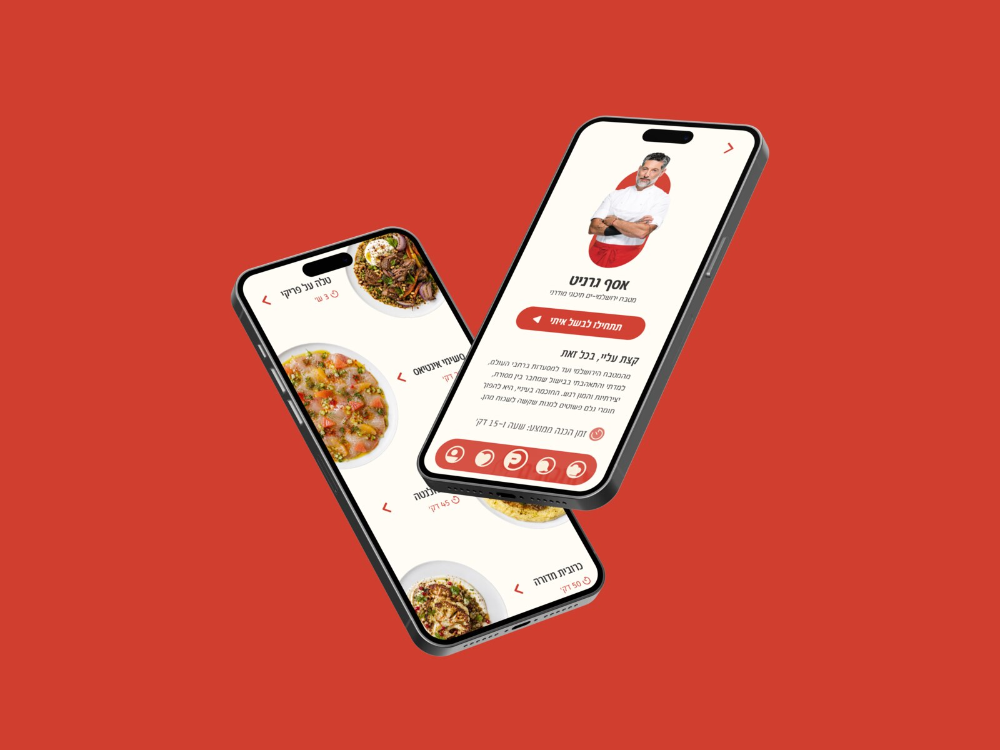
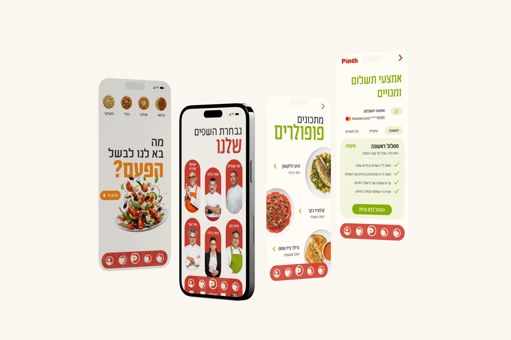
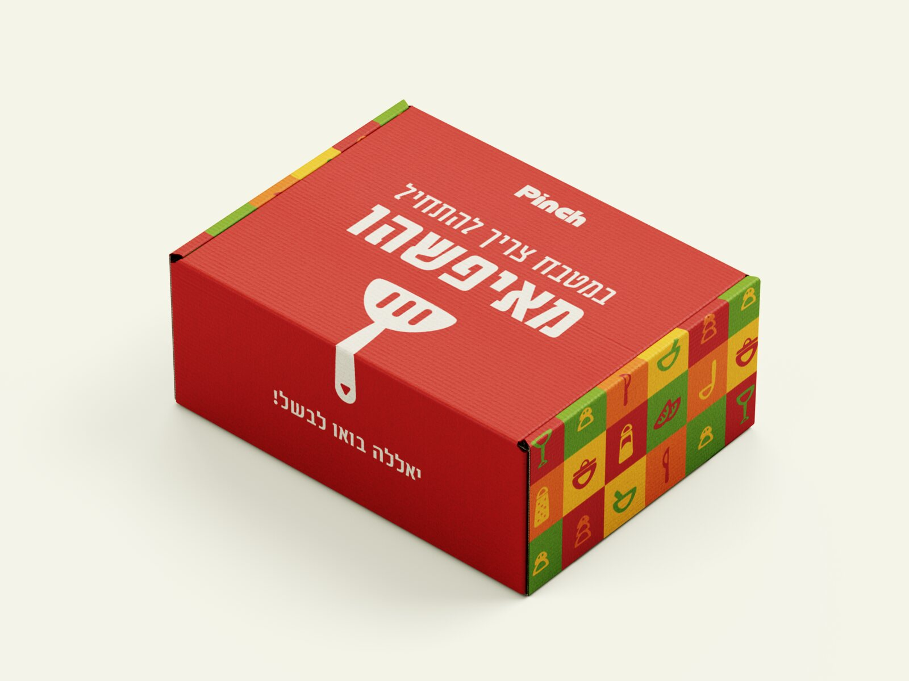
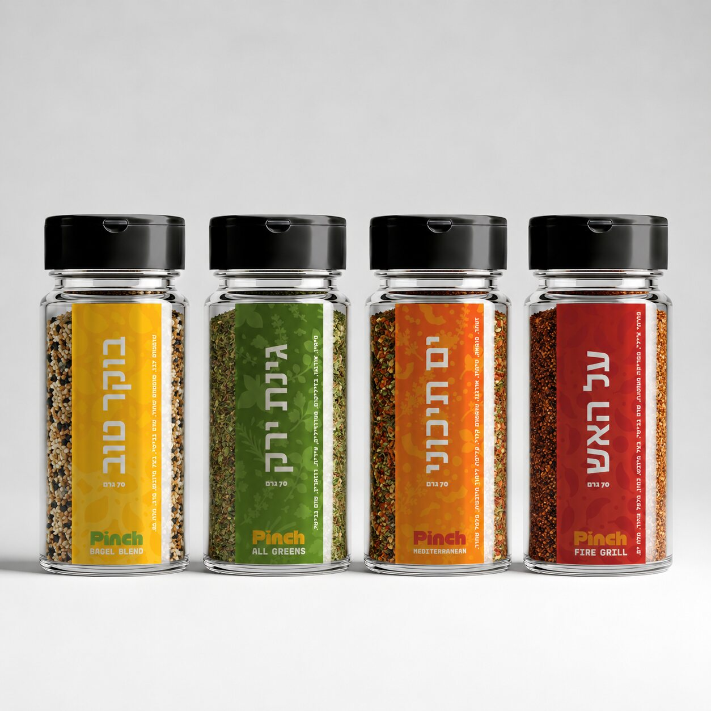
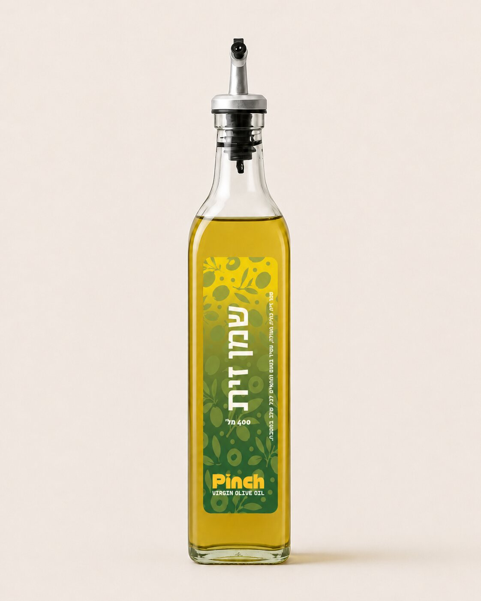

An AI-powered home-cooking app that connects everyday cooks with real, well-known chefs — I led the complete branding and UI/UX design, end to end. אפליקציית בישול ביתי מבוססת בינה מלאכותית שמחברת בין מבשלים מהבית לשפים מוכרים ואמיתיים — ריכזתי את כל תהליך המיתוג ועיצוב ה-UI/UX, מקצה לקצה.
Pinch is an AI platform that offers a personal cooking experience alongside Israel's leading chefs. The project was born from the understanding that technology doesn't have to replace human connection — it can preserve it in new ways. Through AI-driven characters built on real chefs, the platform provides guidance, inspiration and direction in real time, creating the feeling that someone is cooking right there with you. The project spanned research, branding, UX strategy and the design of a complete digital system, all driven by the goal of making the at-home cooking experience more personal, professional and enjoyable. פינץ׳ היא פלטפורמת בינה מלאכותית שמעניקה חוויית בישול אישית בליווי השפים המובילים בישראל. הפרויקט נולד מתוך ההבנה שטכנולוגיה לא חייבת להחליף את הקשר האנושי, אלא יכולה לשמר אותו בדרכים חדשות. באמצעות דמויות מבוססות בינה מלאכותית שנבנו על בסיס שפים אמיתיים, הפלטפורמה מאפשרת לקבל ליווי, השראה והכוונה בזמן אמת ולהרגיש שיש מי שמבשל יחד איתך. הפרויקט כולל מחקר, מיתוג, אפיון חוויית משתמש ועיצוב מערכת דיגיטלית שלמה, מתוך שאיפה להפוך את חוויית הבישול בבית לאישית, מקצועית ומהנה יותר.






